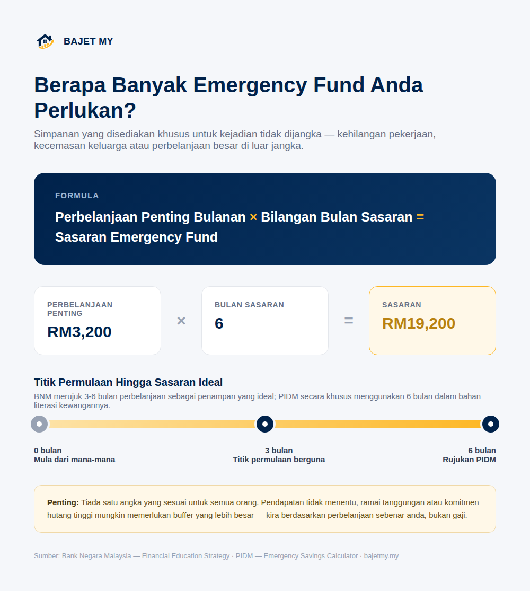

Kereta rosak, kehilangan pekerjaan, ahli keluarga jatuh sakit atau perbelanjaan besar yang tidak dijangka boleh berlaku pada bila-bila masa.
Emergency fund ialah simpanan yang disediakan khusus untuk menghadapi kejadian tidak dijangka supaya anda tidak perlu bergantung sepenuhnya kepada kad kredit, pinjaman atau wang yang diperuntukkan untuk matlamat lain.

Kenapa emergency fund penting?
Tujuan emergency fund bukan untuk mengejar pulangan pelaburan yang tinggi. Tujuannya ialah memberi kecairan dan masa apabila berlaku kejutan kewangan.
Bank Negara Malaysia telah menekankan kepentingan penampan kewangan untuk menghadapi kehilangan pendapatan dan kejutan kewangan. Dalam bahan pendidikan kewangan BNM, tiga hingga enam bulan perbelanjaan disebut sebagai penampan yang ideal.
PIDM pula menggunakan sasaran enam bulan perbelanjaan sebagai rujukan dalam bahan literasi kewangan dan kalkulator emergency savings mereka.
Perlu simpan 3 bulan atau 6 bulan?
Tiada satu angka yang sesuai untuk semua orang.
Tiga hingga enam bulan ialah titik permulaan yang berguna, tetapi sasaran peribadi boleh lebih rendah atau lebih tinggi bergantung kepada keadaan.
| Keadaan | Pertimbangan |
|---|---|
| Pendapatan sangat stabil | Mungkin memerlukan buffer yang lebih kecil berbanding pendapatan tidak menentu |
| Pendapatan freelance/komisen | Buffer lebih besar mungkin lebih sesuai |
| Satu sumber pendapatan dalam keluarga | Pertimbangkan buffer yang lebih besar |
| Ramai tanggungan | Perbelanjaan kecemasan berpotensi lebih tinggi |
| Komitmen hutang tinggi | Lebih banyak kecairan mungkin diperlukan |
| Perlindungan insurans yang kukuh | Sesetengah risiko mungkin lebih terlindung, tetapi emergency fund masih diperlukan |
Jadi, jangan hanya bertanya “Berapa bulan gaji?”. Soalan yang lebih berguna ialah: “Berapa bulan perbelanjaan penting keluarga saya boleh ditanggung jika pendapatan terganggu?”
Kira berdasarkan perbelanjaan, bukan gaji
Emergency fund biasanya lebih bermakna jika dikira berdasarkan perbelanjaan dan komitmen yang perlu diteruskan, bukan keseluruhan gaji.
Contohnya:
| Perbelanjaan / komitmen penting | Sebulan |
|---|---|
| Sewa / ansuran rumah | RM1,200 |
| Makanan asas | RM700 |
| Utiliti | RM250 |
| Pengangkutan | RM350 |
| Pinjaman wajib | RM500 |
| Insurans / takaful | RM200 |
| Jumlah | RM3,200 |
Jika sasaran ialah enam bulan:
RM3,200 × 6 = RM19,200
Maka RM19,200 ialah sasaran berdasarkan andaian tersebut.
Apa yang dikira sebagai kecemasan?
Emergency fund sepatutnya digunakan untuk kejadian yang tidak dijangka dan penting, contohnya:
- Kehilangan pekerjaan atau penurunan pendapatan
- Pembaikan kereta yang penting untuk bekerja
- Kecemasan keluarga
- Perbelanjaan perubatan yang tidak dilindungi sepenuhnya
- Pembaikan rumah yang benar-benar perlu
- Komitmen asas ketika mengalami gangguan pendapatan
Percutian, telefon baharu atau pembelian impulsif bukanlah tujuan utama emergency fund.
Di mana patut simpan emergency fund?
Emergency fund perlu mudah dicapai apabila diperlukan. Antara ciri yang patut dicari ialah:
- Mudah dikeluarkan
- Risiko kehilangan nilai rendah
- Tidak terikat untuk tempoh panjang
- Tidak bergantung kepada keadaan pasaran untuk mendapatkan akses kepada wang
PIDM menganggap simpanan bank dan wang tunai sebagai simpanan kecemasan dalam kalkulator mereka kerana kedua-duanya bersifat cair.
Perlukah emergency fund disimpan dalam KWSP?
Emergency fund mempunyai fungsi yang berbeza daripada simpanan persaraan.
KWSP bertujuan menyediakan simpanan jangka panjang untuk persaraan, manakala emergency fund bertujuan menyediakan kecairan apabila berlaku kejutan kewangan. Jangan anggap simpanan persaraan sebagai pengganti penuh kepada emergency fund hanya kerana terdapat mekanisme pengeluaran tertentu.
Bagaimana jika saya belum ada emergency fund langsung?
Jangan anggap anda perlu terus mempunyai enam bulan perbelanjaan sebelum mula.
Mulakan dengan sasaran kecil yang boleh dicapai:
RM1,000 → RM3,000 → 1 bulan perbelanjaan → 3 bulan → 6 bulan
Jika sasaran akhir ialah RM18,000 dan anda mampu menyimpan RM500 sebulan:
RM18,000 ÷ RM500 = 36 bulan
Anda tidak perlu menunggu tiga tahun untuk mendapat manfaat. Setiap tambahan simpanan meningkatkan buffer anda.
Bila emergency fund perlu digunakan?
Gunakan emergency fund apabila menggunakan wang tersebut membantu anda mengelakkan masalah kewangan yang lebih besar.
Contohnya, jika kereta diperlukan untuk pergi bekerja dan mengalami kerosakan besar, menggunakan sebahagian emergency fund mungkin lebih baik daripada mengambil hutang mahal untuk membayar pembaikan tersebut.
Selepas digunakan, bina semula emergency fund.
Jumlah perbelanjaan, pendapatan, keluarga dan komitmen anda juga boleh berubah. Sasaran emergency fund patut disemak semula dari masa ke masa.
Emergency fund bukan satu-satunya perlindungan
Emergency fund tidak menggantikan semua bentuk perlindungan kewangan. Ia bekerja bersama perkara lain seperti:
- Insurans atau takaful yang sesuai
- Perlindungan pendapatan jika tersedia
- Simpanan persaraan
- Bajet bulanan yang sihat
- Pengurusan hutang
Matlamatnya ialah membina beberapa lapisan perlindungan supaya satu kejadian tidak dijangka tidak terus menyebabkan masalah kewangan yang besar.
Nota: Kalkulator Emergency Fund di bawah ialah anggaran pendidikan berdasarkan perbelanjaan bulanan, komitmen, jumlah simpanan semasa dan kemampuan menyimpan setiap bulan. Sasaran sebenar anda bergantung pada keadaan kewangan, pekerjaan, tanggungan dan tahap risiko yang anda selesa tanggung.
Ringkasan
Sebagai titik permulaan, sasaran 3 hingga 6 bulan perbelanjaan penting boleh digunakan. PIDM secara khusus menggunakan enam bulan sebagai rujukan dalam bahan literasi kewangannya.
Perbelanjaan penting bulanan × bilangan bulan yang anda perlukan = sasaran emergency fund
Yang paling penting bukan mencapai angka tertentu dengan cepat. Yang penting ialah mempunyai wang yang boleh dicapai apabila anda benar-benar memerlukannya.
Sumber
- Bank Negara Malaysia — Financial Education Strategy
- PIDM — Emergency Savings Calculator
- PIDM — How To Start An Emergency Fund
- KWSP — Pay Yourself First